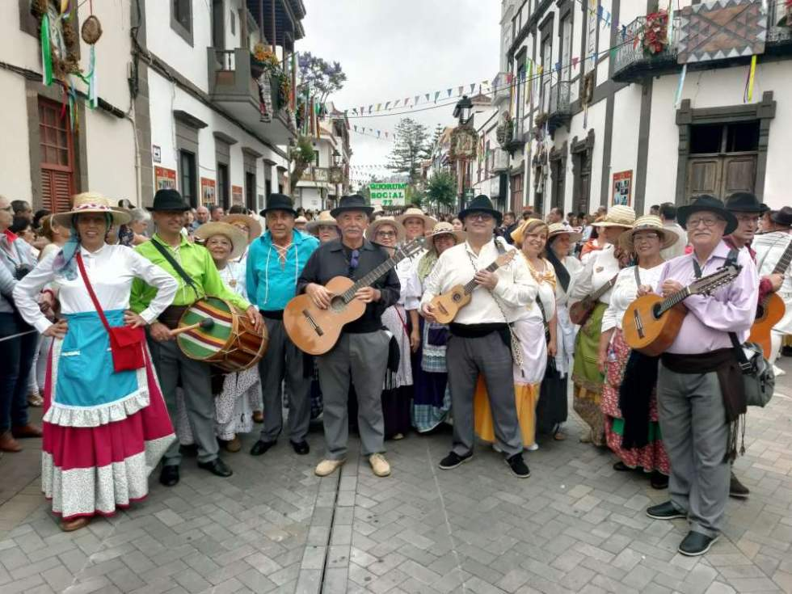

Grupo Islas
Música tradicional canaria con un toque moderno.

Música y cultura en Arucas, Gran Canaria
El Festival Tamadaba es el encuentro anual de música folklórica y moderna en Arucas.

Música tradicional canaria con un toque moderno.

Cantante solista con un estilo pop-fusión.

Especialista en ritmos electrónicos para cerrar la noche.

| Hora | Actividad | Escenario | Duración |
|---|---|---|---|
| 10:00 | Apertura de puertas | Entrada Principal | 30 min |
| 11:00 | Taller de Tambores | Zona Infantil | 60 min |
| 12:30 | Concierto: Grupo Islas | Escenario Grande | 90 min |
| 14:00 | Comida Gastronómica | Plaza Mayor | 120 min |
| 17:00 | Concierto: Laura Vocal | Escenario Grande | 75 min |
| 20:00 | Baile: DJ Juacko | Escenario Grande | 120 min |
Los datos recogidos (nombre, email, teléfono) se usan solo para gestionar tu inscripción. Puedes pedir su borrado escribiendo a festival@arucas.es.
Rellena el formulario para reservar tu plaza.